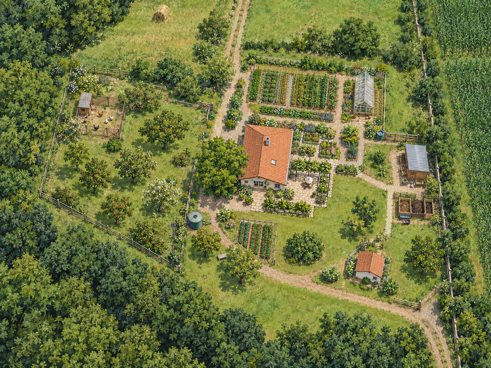
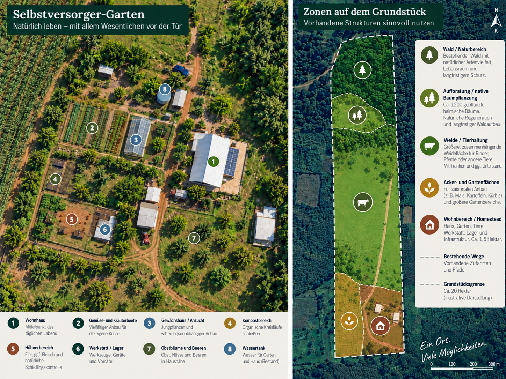

Thinking about self-sufficiency step by step
Cropland, pastures, woodland, several water sources, and an already habitable home create a broad starting point. How intensively these possibilities are used can develop over the years—from a large kitchen garden to a largely self-reliant homestead concept.
Many of the building blocks are already here
Self-sufficiency does not mean having to work all 20 hectares from day one. The existing layout makes it possible to start small and include only the areas that fit your own daily routine and workload.
Approx. 2 ha / 5 acres of cropland
Including a separately fenced area that has already been intended for a private vegetable garden.
Approx. 4.5 ha / 11 acres of pasture
Divided into smaller paddocks, with two natural watering points and existing shade areas.
Approx. 10 ha / 25 acres of woodland
A mixture of largely natural woodland and areas with forestry or reforestation potential.
Several water sources
Wells, a creek, the Río Pirapó, and existing water taps across part of the property.
From a kitchen garden to larger growing areas
The entire cropland area does not need to be used for everyday household needs. An intensive garden close to the house can be the starting point, while the larger field remains available for crops that need more space, animal feed, market gardening, or later expansion.
A range of fruit, nut, and useful plants already grow on the property. These include guava, mango, avocado, pitanga, several citrus varieties, bananas, mulberry, plum, pecan, and other species. The existing stock includes both older trees and younger plantings.
- vegetable area within a short distance of the house
- larger cropland reserve for future expansion
- existing fruit and useful plants as a starting point
- water taps make irrigation easier in already serviced areas

Livestock is possible—but not required
The pasture areas are already divided into smaller sections. Two natural watering points, individual shade trees, two animal shelters, and a corral with space for around 20 cattle provide existing infrastructure that could be adapted to different types of animal keeping.
For a typical self-sufficient household, much smaller numbers would also be conceivable: chickens, a few sheep or goats, individual cattle, or other animals suited to the household’s own needs. The available space keeps those choices open.
Already in place
- several paddocks
- two natural watering points
- two animal shelters
- corral
- water taps across part of the property
Water as a central resource
A deep well and a shallow well are located directly by the house, together with a pressure system and a 2,000-liter tank. Another well is located at the edge of the woodland. There is also a small creek in the front part of the property and the Río Pirapó along the rear boundary. A municipal-water line has also been laid as far as the house.
Which water source is used for drinking water, irrigation, or livestock depends on the intended purpose. The variety of existing sources provides several options.
Woodland as more than a productive resource
The woodland can combine firewood and timber potential with shade, microclimate, and habitat. Various native and regionally typical tree species have already been planted in parts of the woodland, including lapacho, curupaý, yvyra pyta, timbó, and cedro.
A self-sufficiency concept therefore does not need to maximize commercial use of the woodland. Some areas can deliberately remain natural while others are managed or supplemented over the long term.
Intensive close to the house, more extensive farther out
A practical principle is to concentrate the labor-intensive areas around the house and garden. A manageable field for crops can sit nearby; farther out, the larger pasture areas provide room for livestock, while woodland and reforestation areas require much less daily work.

As much self-sufficiency as fits your life
The full property listing contains all property details, photos, infrastructure information, and the asking price.
Back to the full property listing